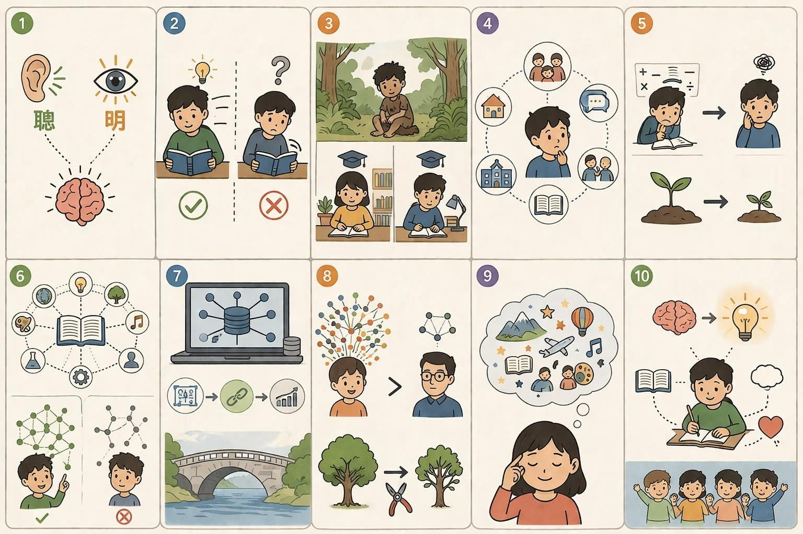

Làm sao để thông minh ? 📚

Thông minh là từ Hán Việt, Thông 聡 nghĩa gốc là thính tai.
1. Sau mở rộng thành thông tuệ, thông thạo chỉ sự thính nhạy về trí tuệ. Minh 明, vốn chỉ năng lực thị giác. Sau mở rộng thành sáng suốt. Cho đến nay, trong chữ Hán vẫn còn nghĩa "thông minh" nghĩa là "mắt sáng tai thính" và nghĩa rộng là thông tuệ, sáng suốt.
2. Người ta vẫn cho rằng "thông minh" là do trời sinh. Nguyễn Du viết về Kiều "thông minh vốn sẵn tính trời". Quả thực, có chuyện hai bạn học cùng một lớp cùng đọc một cuốn sách. Người thông minh đọc nhanh, hiểu nhiều. Người không thông minh, đọc chậm, hiểu ít.
3. Tuy vậy, nếu hoàn toàn do trời sinh cũng không đúng. Bởi con nhà gia thế lạc vào rừng, chắc cũng thành mọi rợ mà thôi. Người mà chúng ta cho là thông minh chắc đã tích lũy được tri thức, kỹ năng phù hợp, trải qua một quá trình giáo dục từ nhỏ. Tuy vậy, có những người được sống trong một môi trường giáo dục tốt mà vẫn không thông minh. Có người sống trong một môi trường giáo dục kém hơn, lại thông minh hơn. Chúng ta giải thích thế nào?
4. Tôi nghĩ rằng trí thông minh hình thành nhờ tương tác không chỉ với tri thức ở trường, mà còn qua quan hệ xã hội, giao tiếp, gia đình, một cách rất tinh vi. Sự thực chúng ta chưa hiểu nhiều về sự phát triển nhận thức của trẻ. Một cách đi sai lầm cũng có thể gây nên hậu quả lâu dài. Chẳng hạn chúng ta có thể thấy trẻ hỏi nhiều gây khó chịu mà chặn họng chúng, khiến trẻ mất đi thói quen hỏi và cơ hội trở thành thông minh.
5. Nói một cách khác sự hình thành nhận thức của trẻ phụ thuộc vào rất nhiều yếu tố, có thể quyết định năng lực nhận thức đó. Chúng ta cho đó là may rủi, thậm chí gán cho yếu tố trời sinh bởi vì chúng ta CHƯA kiểm soát được quá trình đó. Chẳng hạn bắt cộng trừ nhân chia nhiều có thể ảnh hưởng tới sự phát triển nhận thức của một số trẻ.
6. Tất nhiên, tôi cũng chưa biết gì hơn ngoài một số nguyên tắc và kinh nghiệm cá nhân. Riêng về việc đọc sách, khả năng tiếp thu, theo tôi quan sát là khả năng kết nối, liên tưởng với những tri thức đã có. Người có thể tạo ra nhiều kết nối, liên tưởng hơn sẽ hiểu nhanh vấn đề, hiểu rộng, vận dụng tốt, nhớ lâu trong nhiều trường hợp. Nhuệ trí là trí tuệ sắc bén để hiểu vấn đề dựa trên khả năng liên tưởng. Nói một cách khác liên tưởng chính là các "mỏ neo" buộc tri thức vào tâm trí của ta. Người ít liên tưởng, đọc vào lại chuội ra, nghe như nước đổ đầu vịt.
7. Ngày nay các ứng dụng phần mềm được có là thông minh cũng là do kết nối. Kết nối dễ dàng và ổn định nhất là ở tầng cơ sở dữ liệu. Điều đó có phần nào giúp ích để chúng ta hiểu thông minh hình thành thế nào. Đương nhiên, thiết kế CSDL liên thông phải ở giai đoạn sớm của phát triển phần mềm. Sau đó không phải không thể, nhưng chi phí điều chỉnh sẽ lớn và khó khăn hơn.
8. Người ta nói rằng ở trẻ em số lượng kết nối tới một tri thức, ký ức vô cùng lớn, số lượng có thể tới hàng ngàn so tới vài chục ở người lớn. Tất nhiên việc giảm số lượng kết nối này cũng có mục tiêu, nhưng không phải vì thế mà chúng ta cần tiêu diệt các kết nối này, để khiến trẻ không còn cơ hội trở thành thông minh.
9. Một trong những cách kết nối và liên tưởng hiệu quả nhất là rèn luyện trí tưởng tượng. Tưởng tượng là quá trình thiết lập cảm xúc, thông tin, ý tưởng với các cảm xúc, thông tin, ý tưởng có sẵn trong ký ức. Đương nhiên khối lượng kiến thức có sẵn cũng quan trọng, nhưng khả năng thành lập các kết nối còn quan trọng hơn. Thực tế chúng ta thấy có những người học nhiều nhưng tri thức cứng nhắc, không thông minh, không vận dụng được cho các trường hợp chỉ khác tý chút.
10. Vì vậy tôi cho rằng, việc rèn luyện nhuệ trí bằng tưởng tượng là quyết định cho sự thông minh của trẻ. Cho đến nay chúng ta chỉ nhờ cậy vào sự may mắn chứ chưa có ý thức cho việc này.